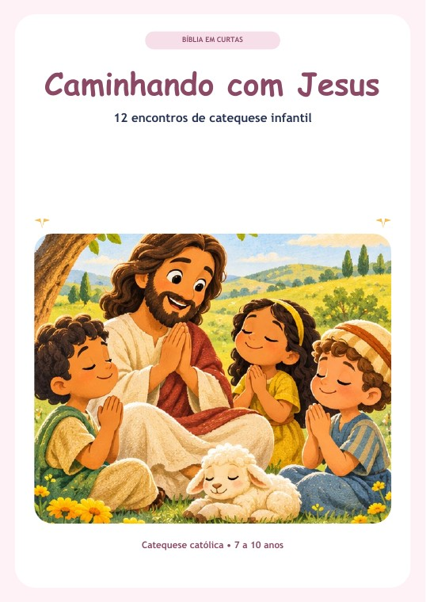

Bíblia em Curtas
Histórias da Bíblia em animação 2D e livros para a família.
 Era Uma Vez na Bíblia30 histórias ilustradas para ler em família
Era Uma Vez na Bíblia30 histórias ilustradas para ler em família
Caminhando com JesusCatequese infantil católica Descobrindo a BíbliaFamília e Escola Bíblica Dominical
Descobrindo a BíbliaFamília e Escola Bíblica Dominical